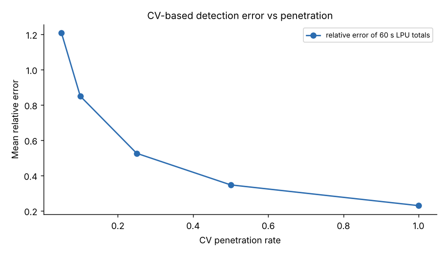
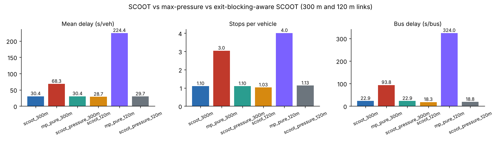
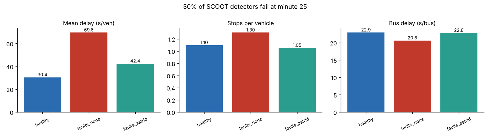
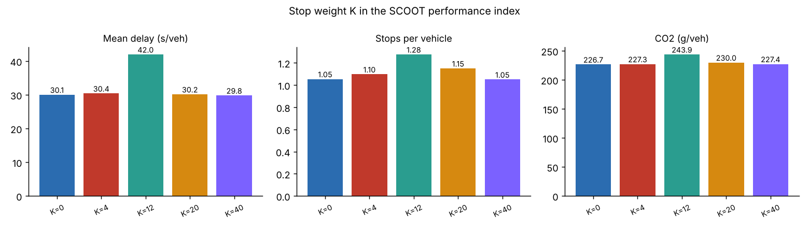
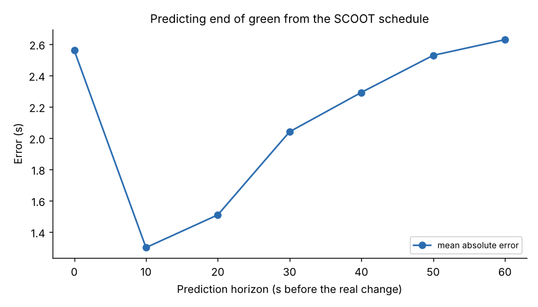

Research directions, implemented
Six open questions about where model-based adaptive control like SCOOT is heading. Each has a working implementation on the lab's SUMO controller, the result it produced, and concrete next steps. Some first attempts do not beat standard SCOOT; that is the honest starting line for a thesis or a paper.
How to evaluate a new SCOOT idea
- Change one thing. Each study swaps one part of SCOOT through a hook in
ScootConfig(data_source,split_chooser,sensor_filterwithfault_handling,stop_weight) and keeps everything else standard. - Compare against baselines on identical demand and seeds: fixed time, vehicle actuation and standard SCOOT.
- Use several seeds and report the spread, not your best run.
- Report more than delay: stops, bus delay and emissions can move in different directions.
- Count every second of delay. The lab adds time spent waiting to enter the network, so a method cannot look good by pushing queues off the map.
- Ask what would stop deployment: validation effort, explainability, data availability, robustness to faulty detectors.
python run_all.py mastery # all six studies, about 10 minutes
python tools/export_site_results.py # refresh the numbers on this page1. SCOOT on connected-vehicle data instead of loops
Could probe or connected-vehicle (CV) data replace SCOOT's upstream loops, and what penetration does the model need?
Upstream loops are costly and fail often, and SCOOT 7 already accepts cooperative data. The simplest substitute is a virtual detector: count connected vehicles crossing the detector position and scale up by the penetration rate p.
How noisy is a scaled-up CV count?
2,000 simulated cycles of the same true traffic on one linkSCOOT smooths profiles over several cycles, so per-cycle noise is partly averaged out. The SUMO study measures how much.
- Implementation
mastery/01_cv_lpu.py; estimator inLink.measure()withdata_source="cv". Part A replays the estimator on the same vehicles that crossed the loops; Part B runs SCOOT on CV data alone.

What we found. Counts of connected vehicles are a noisy stand-in for LPUs: one-minute totals were off by 121% at 5% penetration, 53% at 25% and still 23% at 100%, because a count ignores occupancy. In closed loop the picture is better. SCOOT on CV data alone came within 11% of loop-based SCOOT at 25% penetration (33.9 against 30.4 s), and at 50% and 100% it was better (27.5 and 26.3 s). When queues crawl over an upstream loop, occupancy inflates the loop's LPUs; counts do not have that problem. Below 10% penetration control degrades clearly (43.7 s at 5%).
Take it further. Use trajectories, not just counts: where connected vehicles join the back of the queue gives the queue directly (shockwave theory) and could replace the queue model's prediction step. Fuse loops and CVs with a Kalman filter; estimate penetration online; validate SATO and cruise time automatically from trajectories.
2. A learning split optimiser inside SCOOT
SCOOT's split optimiser makes a three-way choice (retard, keep, advance) from a hand-built rule. Can a learning agent make that same choice better, while every other SCOOT safeguard stays?
Replacing a whole controller with deep reinforcement learning is hard to certify and explain. Keeping SCOOT's action set, minimum greens, offsets and cycle optimiser, and learning only the split decision, keeps the safety envelope.
Train a split agent in your browser
Two-stage junction, 60 s cycle; demand swings between the stages. The agent adjusts green A by −4, 0 or +4 s each cycle.- Implementation
mastery/02_rl_split_optimiser.py(split_chooserhook). Trains on varied seeds, evaluates greedily on three unseen seeds of the full region scenario.
What we found. Not yet. Ten short training runs were unstable (33 to 214 s per episode), and on three unseen seeds the greedy agent averaged 67.7 s against SCOOT's 37.8 s, with more than twice the bus delay. The browser toy shows the idea can work on a small problem; on the full model the state is too coarse, the reward too noisy and the training far too short. A useful negative result to start from.
Take it further. Richer state (profiles, congestion, downstream occupancy); longer training with replay or a small DQN; offline RL from logged SCOOT decisions; learning the offset decision too, with a shared reward across neighbouring nodes.
3. SCOOT against max-pressure, and a spill-back-aware SCOOT
SCOOT's DoS looks only at the approach. Max-pressure uses upstream queue minus downstream load, so it reacts to blocked exits, but it is acyclic and ignores progression. What does each buy?
DoS rule vs pressure-aware rule
Stage A's exit is filling up. Which way should the next stage change move?| Rule | Score −4 | Score 0 | Score +4 | Choice |
|---|
"+4" lengthens stage A. When A's exit is full, extra green for A moves few vehicles, so the exit-aware score discounts A and gives the time to B.
- Implementation
mastery/03_maxpressure.py:MaxPressure(pure, acyclic, every 5 s after minimum green) and a pressure-awaresplit_chooser.

What we found. Pure max-pressure doubled delay on 300 m links (68.3 against 30.4 s) and almost tripled stops: without a cycle there is no progression. On 120 m links it collapsed into spill-back gridlock (224 s). Exit-aware SCOOT never changed a decision on 300 m links because no exit ever filled; on 120 m links it changed 8 decisions and was slightly worse (29.7 against 28.7 s). On this network SCOOT's own optimisers already kept exits clear, so the idea needs a harder test case.
Take it further. Test where spill-back dominates: a grid with short links. Use pressure in the offset optimiser's PI; add perimeter control (gating) driven by the network's macroscopic fundamental diagram.
4. Detector faults and historic substitution
Every SCOOT link depends on one upstream detector. How much does a failed loop cost, and how much does substituting historic data, as SCOOT does with ASTRID, recover?
A stuck-on detector reports a solid queue: SCOOT sees enormous demand and congestion, starves the other stages and lengthens the cycle. A stuck-off detector reports no traffic: the link's green shrinks to its minimum while real vehicles queue. SCOOT's fault logic flags implausible detectors and substitutes historic profiles.
What the split optimiser sees
Two-stage node; the main road's detector fails- Implementation
mastery/04_loop_faults_astrid.py: 30% of detectors fail at minute 25 (half stuck-on, half stuck-off). Flagged after 2 min continuously occupied or 10 min silent;fault_handling="astrid"substitutes each link's profile recorded before the failure.

What we found. Thirteen of the 40 SCOOT detectors failed. Using their data as if it were real more than doubled delay (69.6 against 30.4 s). Substituting each link's historic profile brought delay back to 42.4 s, recovering about 70% of the loss, with stops even slightly below the healthy run. History works because traffic in the failure period resembled the recorded profile; it would go stale on an unusual day.
Take it further. Detect subtle faults (drift, crosstalk, a loop counting half the traffic); substitute from neighbouring links, stop-line loops or connected vehicles instead of history; measure how fast each substitute goes stale when traffic differs from the historic day.
5. Emissions-aware SCOOT: the price of a stop
The performance index is delay + K × stops. Stops burn fuel. How do delay, stops and CO2 trade off as K changes?
TRANSYT's fuel-minimising weighting is about 20 seconds of delay per stop; SCOOT normally uses much less. SCOOT has offered emissions estimates since version 4 and emissions optimisation since 4.4. SUMO's HBEFA model gives CO2 for every vehicle.
One link, one offset decision, different K
Platoon from the upstream node meets this node's green; the offset minimising PI depends on K- Implementation
mastery/05_emissions_stop_weight.py: K = 0, 4, 12, 20, 40 on the region, SUMO emission devices on every vehicle.

What we found. There was no clean trade-off on this network. K = 0, 4, 20 and 40 all gave about 30 s delay, 1.05 to 1.15 stops per vehicle and 227 to 230 g CO2 per vehicle. The K = 12 run was worse on every measure (42 s, 244 g) because one early decision sent the cycle optimiser down a different path. The lesson: SCOOT's many small decisions make single runs path-dependent, so test settings like K over several seeds before concluding anything.
Take it further. Weight stops by vehicle type (a bus or truck stop costs far more), optimise NOx near schools, and test eco-driving connected vehicles together with SCOOT's emission weighting.
6. Predicting stage changes for GLOSA
Green Light Optimal Speed Advisory needs to know when the current green will end. SCOOT keeps a schedule and changes it only in small steps; how predictable is it?
At every second of every green, the lab predicts the end of green from SCOOT's current schedule and compares it with what then happened. Temporary split moves, offset steps, cycle changes and bus priority all add error, and more of it the further ahead the prediction.
- Implementation
mastery/06_glosa_prediction.py.

What we found. Predicting from SCOOT's schedule works well: mean error between 1.3 and 2.6 s for horizons up to a minute, with the 90th percentile below 6 s. The error in the last 10 s is higher than at 10 to 20 s ahead, most likely from bus extensions and recalls, which move a change at short notice; longer horizons add temporary split moves, offset steps and cycle changes.
Take it further. Publish a confidence band, not a single time; let SCOOT freeze its schedule for the last few seconds once a prediction has been sent; measure the fuel benefit of advice under realistic prediction error.
More directions worth a project
- Automatic validation: estimate SATO, cruise time and lags continuously from data instead of a site visit.
- Pedestrians and cyclists: pedestrian SCOOT varies the crossing invitation by crowd size; extend the PI to person delay.
- Network gating: perimeter control using the macroscopic fundamental diagram, layered on SCOOT regions.
- Digital twins: keep a SUMO model calibrated from SCOOT and ASTRID data and test plan changes before deploying them.
- Incident detection: modern anomaly detection on SCOOT's link data, building on INGRID.
- Migration: how to compare SCOOT with newer systems (for example London's FUSION) fairly, on the same network and demand.
Reading list
- Hunt, P. B., Robertson, D. I., Bretherton, R. D., & Winton, R. I. (1981). SCOOT: a traffic responsive method of coordinating signals. TRRL Laboratory Report LR1014. PDF
- Department for Transport (1999). The "SCOOT" urban traffic control system. Traffic Advisory Leaflet 7/99. PDF
- Robertson, D. I. (1969). TRANSYT: a traffic network study tool. RRL Report LR253.
- Varaiya, P. (2013). Max pressure control of a network of signalized intersections. Transportation Research Part C, 36.
- TRL Software. SCOOT version history.
- Lopez, P. A., et al. (2018). Microscopic traffic simulation using SUMO. IEEE ITSC.